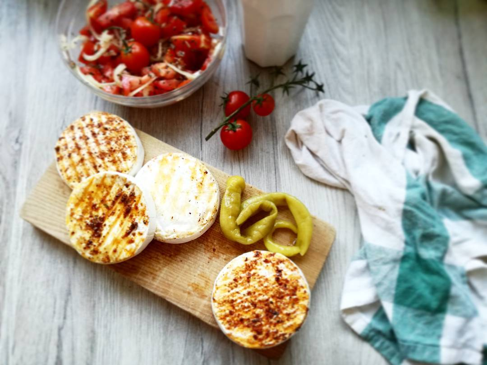

Rajčinový šalát podľa @d.o.m.i.n.i.k.a.1 — Normy Jedál
#grilovanyhermelin #rajcinovysalat #grilujem #dnesjem #vkuchyni #mojejedlo #dnesgrilujem #mnam #omnomnom #food #lunch #foodie #foodporn #foodpost #foodpic #instafood #varime_s_laskou #foodstagram #eat #omnomnom #simple #simplefood #easy #domisahravkuchyni